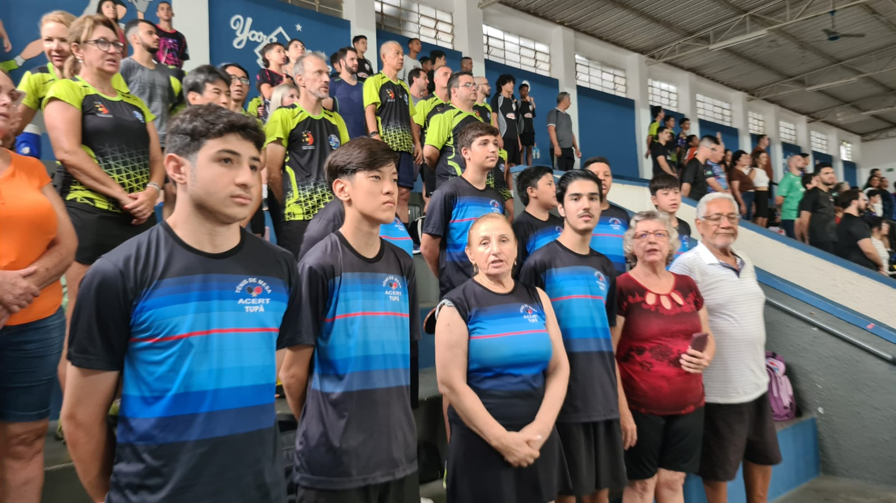

Departamento de Tênis de Mesa
Reflexos, Foco e Espírito Japonês
O Tênis de Mesa, conhecido no Japão como 卓球 (Takkyū), é mais do que um esporte de precisão: é uma prática que une mente e corpo. No Kaikan, o departamento é um espaço onde todas as idades se encontram — desde iniciantes curiosos até competidores apaixonados — em um ambiente de amizade, disciplina e muita energia positiva.
🏓 Para Todos os Níveis
Você pode participar independentemente da sua experiência. Aqui temos:
- Turmas Iniciantes: Aprenda desde o básico — empunhadura, saque, movimentação e controle da bola.
- Treinos Avançados: Para quem busca melhorar técnica, velocidade e estratégia de jogo.
- Treinos Infantis: Atividades lúdicas que desenvolvem coordenação, reflexos e trabalho em equipe.
Nossos Treinos
Os encontros acontecem em um ambiente estruturado, com mesas oficiais e orientação de membros experientes. Além de aprimorar suas habilidades, você fará parte de uma comunidade acolhedora que incentiva o crescimento pessoal e esportivo.
- Quando: Quartas e Sábados, das 18:00 às 21:00.
- Local: Ginásio do Kaikan.
- Quem pode participar: Crianças, jovens e adultos — sócios ou convidados.
💪 Benefícios de Praticar Tênis de Mesa
- Agilidade e Reflexos: Melhore sua coordenação motora e tempo de reação.
- Concentração e Disciplina: Desenvolva foco mental e autocontrole em cada jogada.
- Amizade e Cooperação: Crie laços com pessoas de todas as idades em um ambiente saudável e divertido.
- Saúde e Bem-Estar: Uma forma leve e eficaz de se exercitar e aliviar o estresse.
Venha Jogar Conosco!
Se você busca um novo hobby, um esporte competitivo ou simplesmente uma forma divertida de manter-se ativo, o Tênis de Mesa do Kaikan é o lugar certo. Traga sua raquete, seu sorriso e venha fazer parte do nosso grupo!
Entre em Contato